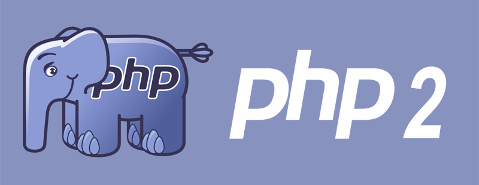
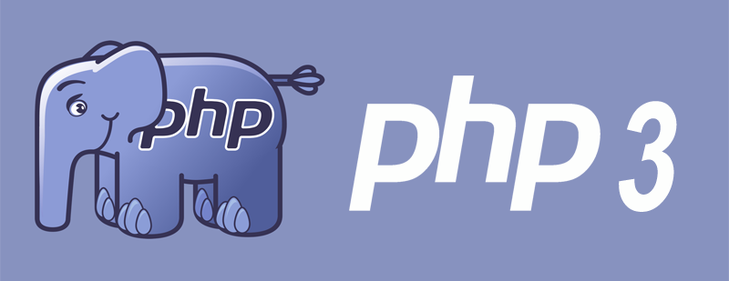
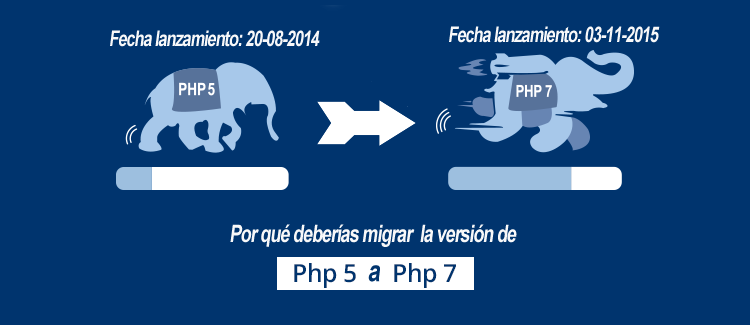

|
1) PHP 1.0
Su lanzamiento fue en el año 1995 específicamente la fecha 08-06-1995, Llamada oficialmente “Personal Home Page Tools (PHP Tools)”. Es la primera versión en usar el nombre “PHP”. Hoy en día ya no tiene soporte. |
|  |
2) PHP 2.0
Su lanzamiento fue en el año de 1997, específicamente la fecha 01-11-1997, Considerada por sus creadores la “herramienta más rápida y sencilla” para crear páginas web dinámicas. Hoy en día se desconoce el soporte de esta versión. |
|  |
3) PHP 3.0
Su lanzamiento fue en el año de 1998, específicamente la fecha 06-06-1998, Zeev Suraski y Andi Gutmans reescribieron la base para esta versión. Llego a su fin el día 20-10-2000, siendo ese día el fin del soporte técnico para esta versión.
Una de las mejoras de PHP 3.0 era su gran extensibilidad. Extensibilidad nos referimos a la existencia de un núcleo o core al que se le pueden ir agregando líneas de código que permiten hacer más cosas. Por ejemplo, podemos deducir que se trataría como una base sobre la que podemos ir añadiendo más objetos. |
|
4) PHP 4.0
Su lanzamiento fue en el año de 2000, fecha exacta el 22-05-2000, el fin del soporte se dio 23-01-2001, su principal cambio fue agregar un sistema de parsing de dos fases llamado motor Zend. Además del aumento en rendimiento, se introdujeron novedades relacionadas con el soporte de objetos en PHP. La programación orientada a objetos (POO), es una forma avanzada de programación y gracias a estas características PHP se encuentra entre los lenguajes más destacados del medio. |
|
5) PHP 5.0
Su lanzamiento fue en el año de 13-07-2004, el fin del soporte se dio en la fecha de 05-09-2005, las características importantes de esta versión son: Motor Zend II con un nuevo modelo de objetos. |
|
6) PHP 5.6
Su lanzamiento fue en el año de 2014, fecha exacta 20-08-2014, su soporte está dada hasta la fecha 31-12-2018, sus mejoras son: Constantes con expresiones escalares, listas de argumentos de longitud variable y exponencial mediante el operador. |
|  |
7) PHP 7.0
Su lanzamiento fue en el año de 2015, fecha exacta 03-11-2015, el soporte será hasta el 03-11-2018, principales mejoras son Mejoras de rendimiento, declaración de tipos de retorno en funciones.
El más importante cambio es que no sólo se mejoró la velocidad. Según nos informan en php.net, el uso de memoria en esta nueva versión se ha visto reducido drásticamente. En un examen realizado para el CMS Moodle 3.0, aparte de duplicar la velocidad, el uso de memoria se redujo en un 40% respecto a las versiones anteriores. |